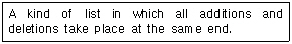
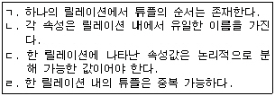
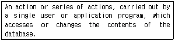
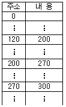
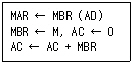
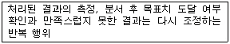
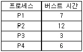
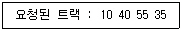
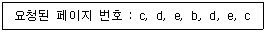

정보처리산업기사 (2006-03-05 기출문제)
1과목: 데이터 베이스
1. 뷰(View)의 설명으로 거리가 먼 것은?
- SQL에서 뷰를 생성할 때는 CREATE문을 사용한다.
- 뷰를 통하여 데이터를 접근하게 하면 뷰에 나타나지 않은 데이터를 안전하게 보호할 수 있다.
- 필요한 데이터만 뷰로 정의해서 처리할 수 있기 때문에 관리가 용이해진다.
- 삽입, 삭제 연산에 아무런 제한이 없으므로 사용자가 뷰를 다루기가 편하다.
(정답률: 84%)

2. 검색방법 중 찾고자 하는 레코드 키가 있음직한 위치를 추정하여 검색하는 방법은?
- 이진(Binary) 검색
- 보간(Interpolation) 검색
- 피보나치(Fibonacci) 검색
- 순차(Sequential) 검색
(정답률: 50%)
3. E-R 모델에서 사각형은 무엇을 의미하는가?
- 관계 타입
- 개체 타입
- 속성
- 링크
(정답률: 87%)
4. 해싱 함수 기법 중 어떤 진법으로 표현된 주어진 레코드 키 값을 다른 진법으로 간주하고 키 값을 변환하여 홈 주소로 취하는 방식은?
- 숫자 분석(Digit Analysis)
- 대수적 코딩(Algebraic Coding) 방법)
- 기수(Radix) 변환법
- 제곱(Mid-Square) 법
(정답률: 76%)
5. 데이터 모델이 포함하는 구성요소와 거리가 먼 것은?
- 개념(Concept)
- 구조(Structure)
- 연산(Operation)
- 제약조건(Constraint)
(정답률: 62%)
6. 물리적 데이터베이스 설계시 고려사항으로 적당하지 않은 것은?
- 스키마의 모델링 작업과 요구되는 트랜잭션 파악
- 파일과 구조 저장을 위한 최소한의 효율적 공간
- 트랜잭션의 실행을 위한 시스템내 입력부터 결과까지의 소요 시간
- 단위시간당 처리 가능한 평균 트랜잭션 수
(정답률: 56%)
7. 릴레이션 R의 두 애트리뷰트 A와 B 사이에 함수적 종속성 A→B가 성립할 때, 그 의미를 가장 정확히 설명한 것은?
- 애트리뷰트 A는 릴레이션 R의 후보키이다.
- 애트리뷰트 A의 값 각각에 대해 애트리뷰트 B의 값이 반드시 하나만 연관된다.
- 애트리뷰트 B는 애트리뷰트 A로부터 어떤 함수를 적용해서 구해지는 값이다.
- 애트리뷰트 A는 애트리뷰트 B로부터 어떤 함수를 적용해서 구해지는 값이다.
(정답률: 41%)
8. 개념 스키마(Conceptual Schema)의 설명으로 가장 적합한 것은?
- 데이터베이스의 전체적인 논리적 설계를 의미하는 것으로 데이터 객체, 성질, 관계, 제약조건에 관한 것이다.
- 데이터집단과 데이터를 관리하는 프로그램의 집합체를 말한다.
- 데이터베이스에서 정보를 나타내는 논리적 단위로 파일시스템의 레코드에 해당하는 개념으로 사용한다.
- 물리적 저장 장치의 관점에서 본 전체 데이터베이스의 명세를 말한다.
(정답률: 63%)
9. 다음 자료구조 중 성격이 다른 하나는?
- STACK
- QUEUE
- DEQUE
- TREE
(정답률: 89%)
10. 트리를 표현할 때 가장 적합한 자료구조는?
- Stack
- Queue
- Linked List
- Circular Queue
(정답률: 68%)
11. 다음 설명이 의미하는 것은?

- Array
- Stack
- Queue
- Deque
(정답률: 64%)
12. 트랜잭션이 가져야 할 특성으로 거리가 먼 것은?
- 정확성(Accuracy)
- 원자성(Atomicity)
- 일관성(Consisitency)
- 고립성(Isolation)
(정답률: 50%)
13. 릴레이션에 관한 설명으로 옳은 것은?

- ㄱ, ㄴ
- ㄱ, ㄴ, ㄹ
- ㄴ
- ㄹ
(정답률: 75%)
14. 다음 설명이 의미하는 것은?

- Query
- Backup
- Transaction
- Integrity
(정답률: 66%)
15. SQL 문장의 기술이 적당치 않은 것은?
- select … from … where …
- insert … on … values …
- update … set … where …
- delete … from … where …
(정답률: 83%)
16. 삽입 SQL에 대한 설명으로 옳지 않은 것은?
- 삽입 SQL 실행문은 호스트 실행문이 나타날 수 있는 곳이면, 어디에서나 사용 가능하다.
- SQL문에 사용되는 호스트 변수는 콜론(:)을 앞에 붙인다.
- 응용 프로그램에서 삽입 SQL문은 ‘EXEC SQL’을 앞에 붙여 다른 호스트 명령문과 구별한다.
- 삽입 SQL문의 호스트 변수의 데이터 타입은 이에 대응하는 데이터베이스 필드의 SQL 데이터 타입과 일치하지 않아도 된다.
(정답률: 71%)
17. 관계 데이터 연산인 관계 대수와 관계 해석에 관한 설명으로 옳지 않은 것은?
- 관계 데이터 모델에 대한 연산의 표현 방법으로 관계 대수와 관계 해석은 모두 절차적인 특성을 갖는다.
- 관계 대수는 릴레이션 조작을 위한 연산의 집합으로 피연산자와 결과가 모두 릴레이션이라는 특성을 가지고 있다.
- 관계 해석은 원래 수학의 프레디킷 해석(Predicate Calculus)에 기반을 두고 있다.
- 관계 대수의 일반 집합 연산에는 합집합, 교집합, 찻집합, 카티션 프로덕트 등이 있다.
(정답률: 68%)
18. 어떤 릴레이션에 존재하는 튜플의 개수를 무엇이라고 하는가?
- Cardinality
- Degree
- Domain
- Attribute
(정답률: 74%)
19. 해싱(Hashing)에서 서로 다른 키(Key)가 같은 홈 주소(Home Address)를 가지는 경우를 무엇이라 하는가?
- 동의어(Synonym)
- 재귀(Recursion)
- 충돌(Collision)
- 버킷(Bucket)
(정답률: 66%)
20. 정보(Information)의 의미로 거리가 먼 것은?
- 자료(Data)를 처리하여 얻은 결과
- 사용자가 목적하는 값
- 현실세계에서 관찰을 통해 얻은 값
- 의사결정을 위한 값
(정답률: 77%)
2과목: 전자 계산기 구조
21. 음수를 2의 보수로 표현할 때, 8비트로 나타낼 수 있는 정수의 범위는?
- -27 ~ +27
- -28 ~ + 28
- -27 ~ + 27-1
- -27-1 ~ + 27
(정답률: 68%)
22. 레지스터의 내용을 메모리에 전달하는 기능을 무엇이라 하는가?
- Fetch
- Store
- Load
- Transfer
(정답률: 57%)
23. 오퍼랜드(Operand) 자체를 데이터로 기억하는 방식은?
- 상대 주소 지정 방식
- 인덱스 지정 방식
- 즉시 주소 지정 방식
- 변형 주소 지정 방식
(정답률: 64%)
24. 명령어의 주소부분(Operand)을 데이터로 사용할 경우 장점으로 볼 수 있는 것은?
- 메모리 참조의 횟수를 줄일 수 있다.
- 레지스터 개수를 줄일 수 있다.
- 부동 소수점 레지스터를 사용하므로 속도가 빠르다.
- 동작을 하는데 많은 시간이 소요된다.
(정답률: 58%)
25. 다음 중 명령이 시작되는 최초의 번지를 기억하고 있는 레지스터는?
- 스택
- 누산기
- 베이스 레지스터
- 명령 레지스터
(정답률: 48%)
26. 2진수 1010(2)을 그레이(Gray) 코드로 변환한 것으로 옳은 것은?
- 1111
- 1001
- 1011
- 1101
(정답률: 72%)
27. 2개 이상의 자료를 섞을 때(문자삽입 등)의 사용에 편리한 연산자는?
- MOVE 연산
- 보수 연산
- AND 연산
- OR 연산
(정답률: 66%)
28. 다음 중 가상(Virtual) 기억장치에 관한 설명이 옳지 않은 것은?
- 컴퓨터의 속도를 개선하기 위한 방법이다.
- 주기억장치와 보조 기억장치가 계층 기억 체제를 이루고 있다.
- 컴퓨터의 기억용량을 확장하기 위한 방법이다.
- 하드웨어에 의한 것이 아니라 소프트웨어에 의해 실현된다.
(정답률: 43%)
29. 컴퓨터의 성능을 평가할 수 있는 측면이 아닌 것은?
- 사용자의 편리성
- 응답시간
- 제작회사
- 신뢰도
(정답률: 87%)
30. 16진수 (BC.D)16를 8진수로 표현한 것은?
- (274.15)8
- (274.45)8
- (274.61)8
- (274.64)8
(정답률: 58%)
31. JK 플립플롭에서 Jn=0, Kn=0 일 때, Qn+1의 출력은?
- 0
- 1
- Qn
- -1
(정답률: 50%)
32. 인터럽트를 발생한 장치가 프로세서에게 분기할 곳의 정보를 제공해 주는 것과 관계가 있는 것은?
- PSW
- 서브루틴
- 벡터(Vectored) 인터럽트
- 인터럽트 인에이블(Enable) 신호
(정답률: 53%)
33. 디코더(Decoder)는 주로 어떤 게이트의 집합으로 구성되는가?
- NOT
- XOR
- OR
- AND
(정답률: 49%)
34. 기억장치의 주소와 그 내용이 다음과 같을 때 어셈블리어(Assembly Language)로 LDA 120이면 한 명령이 직접 주소 지정방식일 경우 오퍼랜드(Operand)는 무엇이 되는가?

- 120
- 200
- 270
- 300
(정답률: 69%)
35. 다음과 같은 마이크로 동작에 해당하는 인스트럭션은?

- AND
- STA
- BSA
- LDA
(정답률: 42%)
36. 중앙처리장치에서 마이크로 동작의 실행이 순서적으로 발생할 수 있도록 역할을 담당하는 것은?
- 레지스터(REGISTER)
- 제어(CONTROL) 신호
- 누산기(ACCUMULATOR)
- 프로그램 카운터(PROGRAM COUNTER)
(정답률: 58%)
37. N개의 입력 데이터에서 입력선을 선택하여 단일 채널로 송신하는 것은?
- 인코더
- 감산기
- 전가산기
- 멀티플렉서
(정답률: 64%)
38. 다음 명령 중에서 번지 필드(Address Field)가 필요 없는 명령은?
- 데이터 전송 명령
- 산술 명령
- 스킵(Skip) 명령
- 서브루틴 Call 명령
(정답률: 52%)
39. 하나의 전가산기를 구성하는데 필요한 최소의 반가산기 수는 몇 개인가?
- 5
- 4
- 3
- 2
(정답률: 78%)
40. 인덱스 레지스터의 사용 목적이 아닌 것은?
- 서브루틴 연결
- 어드레스 수정
- 반복 계산 수행
- 입·출력
(정답률: 64%)
3과목: 시스템분석설계
41. 객체지향 개발 방법론 중 Rumbaugh의 OMT 모델링 방법이 아닌 것은?
- 기능 모델링
- 처리 모델링
- 객체 모델링
- 동적 모델링
(정답률: 51%)
42. 체크 시스템에서 계산 처리 단계에서의 오류 검사 방법이 아닌 것은?
- 중복 레코드(Double Record) 검사
- 숫자(Numeric) 검사
- 오버플로우(Overflow) 검사
- 불능, 부정 검사
(정답률: 47%)
43. 색인 순차 편성에서의 각 구역에 대한 설명 중 틀린 것은?
- 트랙 인덱스 구역 - 기본 데이터 구역의 한 트랙상에 기록되어 있는 데이터 레코드 중에서 최대 키 값과 그 주소가 기록되어 있다.
- 실린더 인덱스 구역 - 처리해야 할 레코드가 어느 실린더에 기록되어 있는지를 판별할 수 있는 자료를 갖고 있다.
- 마스터 인덱스 구역 - 실린더 오버플로우 구역에 다시 오버플로우가 발생할 경우를 대비하여 만들어 놓은 공간이다.
- 기본 데이터 구역 - 실제 데이터 레코드가 기록된 구역이다.
(정답률: 62%)
44. 자료 흐름도(DFD : Data Flow Diagram)의 구성 요소가 아닌 것은?
- 시작점/종착점
- 피드백
- 자료 흐름
- 데이터 저장소
(정답률: 59%)
45. 파일의 종류 중 일시적인 성격을 지닌 정보를 기록하는 것은?
- Transaction File
- Backup File
- Source Data File
- Master File
(정답률: 77%)
46. 입력 정보 내용에 관한 설계시 고려사항이 아닌 것은?
- 입력 항목명
- 입력 항목의 순서 및 배열
- 입력 정보에 대한 오류 검사
- 입력 정보의 수집 시기 및 주기
(정답률: 48%)
47. 코드의 오류 발생 형태 중 입력시 좌우 자리가 바뀌어 발생하는 에러는?
- Transcription Error
- Omission Error
- Addition Error
- Transposition Error
(정답률: 78%)
48. 프로세스 처리 패턴 중 두 개의 파일을 서로 대조하여 그 기록 순서와 기록 내용을 검사하는 처리로서, 일반적으로 대조 결과에 이상한 정보가 있을 경우 체크 리스트(Check List)에 출력하는 것을 무엇이라고 하는가?
- Sort
- Matching
- Merge
- Update
(정답률: 78%)
49. HIPO의 설명으로 옳지 않은 것은?
- 문서화의 도구 및 설계 도구 방법을 제공하는 기법이다.
- 상향식 설계 기법이다.
- 기능 중심의 설계 방법이다.
- 입력, 처리, 출력 관계를 시각적으로 기술한다.
(정답률: 76%)
50. Boehm에 의해 제안된 계층적 비용 산정 모델로 시스템 규모를 예측하고 정해진 식에 대입하여 소요인원과 개발인원을 예측하여 소프트웨어 개발비를 산정하는 방법은?
- RCA
- TRW
- COCOMO
- SDC
(정답률: 60%)
51. 파일 편성 방법 중 순차파일 편성 방법의 특징이 아닌 것은?
- 파일내 레코드 추가, 삭제시 파일 전체를 복사할 필요가 없다.
- 집계용 파일이나 단순한 마스터 파일 등이 대표적인 응용파일이다.
- 기본키 값에 따라 순차적으로 배열되어 있다.
- 기억공간의 활용율이 높다.
(정답률: 71%)
52. 시스템 평가에서 처리 시간을 견적하는 경우 견적 방법과 거리가 먼 것은?
- 입력에 의한 계산 방법
- 프로그램 크기에 의한 계산 방법
- 컴퓨터에 의한 계산 방법
- 추정에 의한 계산 방법
(정답률: 50%)
53. 시스템의 5가지 기본 요소 중 아래와 같은 특징을 갖는 것은?

- 입력(Input)
- 제어(Control)
- 피드백(Feedback)
- 처리(Process)
(정답률: 85%)
54. 코드화 대상 자료 전체를 계산하여 이를 필요로 하는 분류 단위로 블록을 구분하고, 각 블록 내에서 순서대로 번호를 부여하는 방식으로 적은 자릿수로 많은 항목의 표시가 가능하고 예비코드를 사용할 수 있어 추가가 용이한 코드로서, 구분 순차코드라고도 하는 것은?
- 순차(Sequence) 코드
- 표의숫자(Significant Digit)
- 블록(Block) 코드
- 연상(Mnemonic) 코드
(정답률: 66%)
55. 컴퓨터에 의한 계산 처리에 앞서 오류 데이터를 찾기 위하여 입력되는 데이터 항목의 논리적 모순 여부를 체크하는 방법은?
- Numeric Check
- Limit Check
- Logical Check
- Matching Check
(정답률: 63%)
56. 입력 방식의 종류 중 현장 정보를 기록한 원시 전표를 전산 부서에서 일정한 주기로 수집하여, 일괄적으로 입력 매체를 작성하는 방식은?
- 분산 입력 방식
- 직접 입력 방식
- 집중 입력 방식
- 턴어라운드(반환) 입력 방식
(정답률: 67%)
57. 시스템 조사 방법 중 실제 작업 현장을 방문하여 실제 사무의 흐름을 사실 그대로 파악하고 조사하는 방법은?
- 면접 조사
- 자료 조사
- 관찰 조사(현장 조사)
- 질문서 조사(앙케이트 조사)
(정답률: 85%)
58. 구조적 분석도구에 해당하지 않는 것은?
- 자료 흐름도(Data Flow Diagram)
- 소단위 명세서(Mini Specification)
- 구조 도표(Structure Chart)
- 자료 사전(Data Dictionary)
(정답률: 35%)
59. 출력 정보 매체화 설계시 고려 사항으로 거리가 먼 것은?
- 출력 형식
- 출력 장치
- 출력 항목 명칭(출력 정보명)
- 출력 방식
(정답률: 68%)
60. 나씨-슈나이더만 차트의 제어논리 구조가 아닌 것은?
- 순차구조(SEQUENCE)
- 선택구조(IF THEN ELSE)
- 반복구조(DO WHILE)
- 전이구조(GO TO)
(정답률: 62%)
4과목: 운영체제
61. 분산 운영체제의 구조 중 모든 사이트는 하나의 중앙 노드에 직접 연결되어 있으며 중앙 노드에 과부하가 걸리면 성능이 현저히 감소되고, 중앙 노드의 고장시 모든 통신이 이루어지지 않는 구조는?
- Start Connection
- Ring Connection
- Fully Connection
- Hierarchy Connection
(정답률: 77%)
62. 운영체제(Operating System)의 자원 경영과 거리가 먼 것은?
- 프로세스(Process) 경영
- 알고리즘(Algorithm) 경영
- 입출력 시스템(I/O System) 경영
- 파일(File) 경영
(정답률: 47%)
63. 다음은 일반적으로 널리 사용되는 파일 보호 기법에 대하여 기술하고 있다. UNIX 시스템에서는 파일보호를 위해 Read, Write, Execute 등 세 가지 접근 유형을 정의하여 사용하고 있다. 이는 어떤 방법을 응용한 것인가?
- 파일의 명명(Naming) - 파일 이름을 다른 사용자가 알 수 없도록 만든다.
- 접근제어(Access Control) - 사용자의 신원에 따라 서로 다른 접근 권한을 허용한다.
- 비밀번호(Paasword) - 각 파일에 판독/기록 패스워드를 부여한다.
- 암호화(Cryptography) - 파일의 내용을 알 수 있도록 암호화한다.
(정답률: 66%)
64. Flynn의 다중처리기 분류에서 Array Processor와 가장 밀접한 것은?
- SIMD
- SISD
- MISD
- MIMD
(정답률: 35%)
65. 보안 매커니즘의 설계 원칙에는 개방된 설계, 최소 특권, 특권의 분할, 매커니즘의 경제성 등이 있다. 이 중 개방된 설계의 의미를 가장 적절하게 설명한 것은?
- 알고리즘은 알려졌으나, 그 키는 비밀인 암호 시스템의 사용을 의미한다.
- 트로이 목마로부터의 피해를 제한하기 위해 모든 주체는 업무 완수에 필요한 최소한의 특권만을 사용해야 한다.
- 가능하다면 객체에 대한 접근은 하나 이상의 조건을 만족하게 해야 한다.
- 가능한 한 기능 검증과 쉽게 정확한 구현을 할 수 있도록 간단히 설계한다.
(정답률: 61%)
66. HRN(Highest Response-ration Next) 스케줄링 방식의 특징으로 옳지 않은 것은?
- 비선점 스케줄링 기법이다.
- 긴 작업과 짧은 작업간의 지나친 불평등을 보완하는 기법이다.
- 우선순위 결정식은 (대기시간+서비스시간)/대기시간이다.
- 우선순위 결정식에서 대기시간이 분자에 있으므로 긴작업도 대기시간이 큰 경우에는 우선 순위가 높이진다.
(정답률: 66%)
67. 프로세스의 정의와 거리가 먼 것은?
- 디스크 상에 저장된 파일 형태의 내용
- 실행중인 프로그램
- 프로시저가 활동 중인 것
- 운영체제가 관리하는 실행 단위
(정답률: 72%)
68. 유닉스 시스템의 구조순서가 바르게 구성된 것은?
- 사용자-커널-쉘-하드웨어
- 사용자-쉘-하드웨어-커널
- 사용자-커널-하드웨어-쉘
- 사용자-쉘-커널-하드웨어
(정답률: 62%)
69. 운영체제에 관한 설명으로 옳지 않은 것은?
- 운영체제는 사용자가 쉽게 하드웨어에 접근할 수 있도록 한다.
- 운영체제는 CPU, 기억장치, 파일, 입출력 장치 등의 자원을 관리한다.
- 운영체제는 사용자와 컴퓨터 시스템 간의 인터페이스 기능을 제공한다.
- 운영체제는 고급 언어로 작성된 프로그램을 컴파일하여 기계어로 만들어준다.
(정답률: 75%)
70. 구역성(Locality) 이론에 대한 설명으로 옳지 않은 것은?
- 구역성 이론은 시간(Temporal) 구역성과 공간(Spatial) 구역성으로 구분할 수 있다.
- 공간 구역성 이론은 기억장소가 참조되면 그 근처의 기억장소가 다음에 참조되는 경향이 있음을 나타내는 이론이다.
- 구역성이란 실행중인 프로세스가 일정 시간 동안에 참조하는 페이지의 집합을 의미한다.
- 일반적으로 공간 구역성의 예는 배열순례(Array Traversal), 순차적 코드의 실행 등을 들 수 있다.
(정답률: 62%)
71. 버퍼링과 스풀링에 대한 설명으로 옳지 않은 것은?
- 버퍼링과 스풀링은 CPU 연산과 I/O 연산을 중첩시켜 CPU의 효율을 높이기 위하여 사용한다.
- 버퍼링은 단일사용자 시스템에 사용되고, 스풀링은 다중사용자 시스템에 사용된다.
- 버퍼링은 디스크를 큰 버퍼처럼 사용하고 스풀링은 주기억장치를 사용한다.
- 버퍼링과 스풀링은 큐 방식의 입출력을 수행한다.
(정답률: 60%)
72. 스레드(Thread)의 특징이 아닌 것은?
- 자신만의 스택과 레지스터(STACK, REGISTER)를 갖는다.
- 하나의 프로세스 내에서 병행성을 증대시키기 위한 기법이다.
- 운영체제의 성능을 개선하려는 하드웨어적 접근 방법이다.
- 독립된 제어흐름을 갖는다.
(정답률: 57%)
73. CPU 스케줄링 알고리즘 중 SJF(Shortest Job First) 스케줄링 방법에 의해 다음 작업들을 실행시킬 때, 평균 반환 시간은 얼마인가?

- 19
- 14
- 7
- 12
(정답률: 45%)
74. 기억장치 관리정책 중 CPU에 의해 실행되거나 참조되기 위해서 주기억장치로 적재할 다음 프로그램이나 자료를 언제 가져 올 것인가를 결정하는 정책은?
- 교체정책(Replacement Strategic)
- 할당정책(Assignment Strategic)
- 반입정책(Fetch Strategic)
- 배치정책(Placement Strategic)
(정답률: 52%)
75. UNIX 시스템의 특징으로 볼 수 없는 것은?
- UNIX 시스템은 사용자에 대해 대화형 시스템이다.
- UNIX 시스템은 다중 작업 시스템(Multi-tasking System)이다.
- UNIX 시스템의 파일 구조는 단층구조 형태이다.
- UNIX 시스템은 다 사용자(Multi-user) 시스템이다.
(정답률: 78%)
76. 다음과 같은 트랙이 요청되어 큐에 도착하였다. 모든 트랙을 서비스하기 위하여 SSTF 스케줄링 기법이 사용되었을 때 트랙 35는 요청된 트랙 중 몇 번째 찾게 되는가? (단, 현재 헤드의 위치는 트랙 50이고, 헤드는 트랙 0 방향으로 움직이고 있다.)

- 3번
- 4번
- 5번
- 6번
(정답률: 46%)
77. 세 개의 페이지를 수용할 수 있는 주기억장치로 현재 페이지는 모두 비어 있는 상태이다. 어떤 프로그램이 다음과 같은 순서로 페이지 번호를 요구하였을 때, 페이지 교체 기법으로 FIFO 기법을 사용하였다면, 페이지 부재는 몇 번 일어나겠는가?

- 3번
- 4번
- 5번
- 6번
(정답률: 64%)
78. 세마포어(Semaphore)의 동작(Operation)과 관련이 없는 것은?
- C 연산
- P 연산
- V 연산
- Semaphore Initialize(초기치 연산)
(정답률: 50%)
79. 운영체제가 프로세스의 관리와 연관하여 하는 활동 중 옳지 않은 것은?
- 사용자 프로세스와 시스템 프로세스의 생성과 제거
- 프로세스의 일시중지와 재수행
- 프로세스 비동기화를 위한 기법 제공
- 교착상태 처리를 위한 기법 제공
(정답률: 51%)
80. 가변 분할 기억장치에서 입력된 프로그램과 데이터를 어느 곳에 적재할지를 결정하는 기억장치 배치전략으로 거리가 먼 것은?
- Last-Fit 기법
- First-Fit 기법
- Best-Fit 기법
- Worst-Fit 기법
(정답률: 72%)
5과목: 정보통신개론
81. HDLC 프로토콜의 기본 기능이 아닌 것은?
- 단방향, 반이중, 전이중 모두 사용 가능하다.
- Byte 방식 프로토콜이다.
- Go-Back-N ARQ 에러제어 방식이다.
- 데이터링크 형식은 Point-to-Point, Multi-Point 모두 가능하다.
(정답률: 63%)
82. 인터넷 프로토콜인 TCP/IP 중 IP는 OSI 7 계층 중 어느 계층에 해당되는가?
- 응용계층
- 전송계층
- 네트워크계층
- 데이터링크계층
(정답률: 69%)
83. 다음 중 신호와 전송방식 그리고 이를 위해 사용되는 신호 변환 장비에 대한 연결이 옳지 않은 것은?
- 아날로그 신호 - 디지털 전송 - 코덱(Codec)
- 디지털 신호 - 아날로그 전송 - 모뎀(Modem)
- 디지털 신호 - 디지털 전송 - CSU
- 아날로그 신호 - 아날로그 전송 - DSU
(정답률: 55%)
84. 네트워크의 형상(Topology)에 따른 LAN의 분류방식으로 적합하지 않은 것은?
- 링(Ring) 형
- 버스(Bus) 형
- 성(Star) 형
- 베이스밴드(Baseband) 형
(정답률: 79%)
85. HDLC 프레임을 구성하는 필드가 아닌 것은?
- FCS 필드
- Flag 필드
- Control 필드
- Link 필드
(정답률: 47%)
86. 주프로세서(Host Processor)를 통하여 데이터를 교환하며 통신망제어를 간편하게 할 수 있는 통신망 형태는?
- 분산형
- 루우프(Loop) 형
- 계층형
- 중앙 집중형
(정답률: 70%)
87. 기간통신사업자의 회선을 임차하여 부가가치를 부여한 음성이나 데이터정보를 제공하여 주는 서비스망은?
- LAN
- VAN
- ISDN
- PSDN
(정답률: 65%)
88. 다음 중 CATV 분배망 등에 사용되며 데이터 전송률이 500Mbps 정도까지 가능한 전송 매체는?
- 2선식 개방 선로
- 꼬임선
- 동축케이블
- 광섬유
(정답률: 65%)
89. 다음 중 데이터 전송 경로가 올바른 것은?
- 터미널-통신채널-모뎀-통신제어장치-모뎀-컴퓨터
- 터미널-모뎀-통신채널-모뎀-통신제어장치-컴퓨터
- 터미널-모뎀-통신제어장치-모뎀-통신채널-컴퓨터
- 터미널-통신제어장치-모뎀-통신제어장치-모뎀-컴퓨터
(정답률: 54%)
90. 다음 중 라우터(Router)에 관한 설명으로 틀린 것은?
- 네트워크 계층을 지원한다.
- 전송되는 패킷들의 경로를 결정한다.
- 게이트웨이(Gateway) 기능을 지원한다.
- 브릿지(Bridge) 기능만을 지원한다.
(정답률: 76%)
91. 다중화 방식 중 실제로 전송할 데이터가 있는 단말장치에만 타임 슬롯을 할당함으로써 전송 효율을 높이는 특징을 가진 것은?
- 동기식 TDM
- FDM
- 비동기식 TDM
- MODEM
(정답률: 49%)
92. 다음 중 오류정정이 가능한 부호가 아닌 것은?(문제오류로 모두 정답 처리 되었습니다. 여기서는 1번을 정답으로 합니다.)
- Convolution 부호
- 2차원 Parity 부호(수직-수평 패리티 부호)
- 해밍(Hamming) 부호
- CRC(Cyclic Redundancy Check) 부호
(정답률: 74%)
93. 다음 중 광섬유 케이블의 장점이 아닌 것은?
- 고속 대용량 전송이 가능하다.
- 가볍고 부식되지 않으므로 분기나 접속이 용이하다.
- 장거리 전송이 가능하다.
- 가볍고 내구성이 강하다.
(정답률: 65%)
94. ISDN 채널에서 D 채널의 용도는?
- 음성 채널
- 사용자 서비스를 위한 채널
- 서비스 제어를 위한 채널과 저속의 패킷 전송 채널
- 예비 채널
(정답률: 53%)
95. 다음 중 광대역 종합정보통신망의 실현 방안으로 적합한 통신방식은?
- WAN
- ATM
- ADSL
- N-ISDN
(정답률: 38%)
96. 다음 중 쌍방향 통신의 뉴미디어에 해당하는 것은?
- Radio
- Videotex
- Teletext
- CCTV
(정답률: 66%)
97. 8위상편이변조(PSK)는 한 번에 몇 개의 신호 비트[bit]가 전송되는가?
- 2
- 3
- 4
- 8
(정답률: 58%)
98. 다음 중 표현계층에 대한 기능으로 틀린 것은?
- 암호화
- 경로선택
- 코드변환
- 문맥관리
(정답률: 61%)
99. 다음 중 회선교환방식에 대한 설명으로 틀린 것은?
- 회선교환기에서 오류제어가 용이하다.
- 일대일 정보통신이 가능하다.
- 길이가 긴 연속적인 데이터 전송에 적합하다.
- 회선교환기내에서 처리지연시간이 비교적 적다.
(정답률: 34%)
100. 인터넷의 통신망들을 관리하고 기술을 지원하는 표준화 기구 중 변화하는 망 환경에 따라 새로운 기술을 제시하고 인터넷 표준안을 제정하기 위한 기술 위원회는?
- IESG(Internet Engineering Steering Group)
- IAB(Internet Activities Board)
- ISO(International Standards Organization)
- IETF(Internet Engineering Task Force)
(정답률: 38%)